건축설비기사 (2020-08-22 기출문제)
1과목: 건축일반
1. 호텔의 각부계획에 관한 설명으로 옳지 않은 것은?
- 보이실, 린넨실은 숙박부 각 객실의 중심에 인접배치시킨다.
- 로비나 라운지는 공용부분의 중심부로서 특색있는 분위기를 만드는 것이 좋다.
- 객실수에 대한 주(主)식당의 면적비율은 커머셜호텔이 리조트호텔보다 높다.
- 지배인실은 외래객이 알기 쉬운 곳에 배치하여 자유롭게 출입할 수 있도록 한다.
(정답률: 73%)

2. 사무소건물에 아트리움(atrium)을 도입하는 이유로 옳지 않은 것은?
- 에너지 절약에 유리하다.
- 사무공간에 빛과 식물을 도입하여 자연을 체험하게 한다.
- 근로자들의 상호교류 및 정보교환의 장소를 제공한다.
- 보다 넓은 사무공간을 확보할 수 있다.
(정답률: 89%)
3. 빛에 관련된 항목과 그 단위로 옳지 않은 것은?
- 광속 : W/m2
- 조도 : lx
- 휘도 : cd/m2
- 광도 : cd
(정답률: 79%)
4. 사무소 건축에서 층고를 낮게 정하는 이유로 옳지 않은 것은?
- 에너지 절약상 경제적이다.
- 승강기의 왕복시간을 단축시켜 승객수송능력을 높일 수 있다.
- 같은 높이에 많은 층수를 얻을 수 있어 부동산가치가 증대된다.
- 공기조화 부하를 감소시켜 줄 수 있다.
(정답률: 72%)
5. 학교 교실의 실내 조도를 균일하게 하는 대책으로 적당하지 않은 것은?
- 천창
- 스포트라이트
- 차양
- 유리블럭
(정답률: 83%)
6. 철골구조의 조립보 중 강판을 잘라서 웨브와 플랜지를 제작하고 웨브와 플랜지를 용접으로 접합하거나 웨브나 L형강을 리벳으로 접합한 보는?
- 허니컴보
- 래티스보
- 트러스보
- 판보
(정답률: 65%)
7. 결로발생의 원인이 될 수 있는 요소와 가장 거리가 먼 것은?
- 실내외의 온도차
- 실내의 환기상태
- 건물지붕의 기울기
- 건물외피의 단열상태
(정답률: 89%)
8. 초고층 골조시스템의 한 종류인 아웃트리거시스템(outrigger system)에 관한 설명으로 옳은 것은?
- 간격이 좁게 배열된 기둥과 보를 건물 외부에 둘러싸서 횡하중에 저항하는 시스템
- 횡하중에 저항하는 코어를 외부 기둥에 연결하는 시스템
- 횡하중을 중앙부 코어에서 모두 부담하는 시스템
- 외부에 가새를 넣어 횡력을 부담하도록 하는 시스템
(정답률: 70%)
9. 기둥, 보, 바닥, 벽과 같은 구조체 자체의 무게에 해당되는 하중은?
- 풍하중
- 고정하중
- 적재하중
- 적설하중
(정답률: 89%)
10. 철근콘크리트 구조물의 구조계획에 관한 설명으로 옳지 않은 것은?
- 하중의 전달 측면에서 작은보가 스팬이 작은 큰보 보다 스팬이 큰보에 걸칠 수 있도록 계획한다.
- 기둥은 가능한 규칙적으로 배치하는 것이 좋다.
- 바람이나 지진하중에 대해 구조상 가장 중요한 부재는 내진벽이다.
- 장스팬 구조물일 경우에는 PSC보를 고려할 수 있다.
(정답률: 68%)
11. 중앙에 케이스, 대 등에 의한 직선 또는 곡선에 의한 고리모양부분을 설치하고 이 안에 레지스터, 포장대 등을 놓는 상점의 평면배치 형식은?
- 굴절배열형
- 직렬배열형
- 환상배열형
- 복합형
(정답률: 74%)
12. 다음 그림과 같은 블록 내력벽체의 X방향 벽량은?
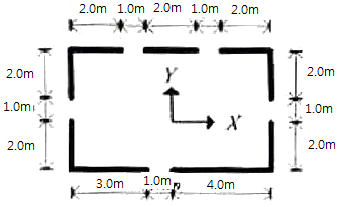
- 0.2m/m2
- 0.225m/m2
- 0.325m/m2
- 0.525m/m2
(정답률: 73%)
13. 일반적으로 병원건축의 시설규모를 결정하는데 기준이 되는 것은?
- 환자 병상수
- 간호사수
- 의사수
- 건물의 용적률
(정답률: 91%)
14. 공동주택 생활공간의 계획에 관한 설명으로 옳은 것은?
- 거실과 침실은 현관에서 다른 실들을 거쳐서 진입하는 것이 프라이버시 확보에 유리하다.
- 부엌은 유틸리티룸(utility room)및 식당과 직접 연결한다.
- 단위 평면의 깊이는 깊게 할수록 채광 및 에너지 절약에 유리하다.
- 발코니 난간의 높이는 0.6m 이상으로 하여 어린이 안전에 유의한다.
(정답률: 72%)
15. 잔향시간이란 음의 음압레벨이 얼마 감쇠하는데 소요되는 시간인가?
- 50dB
- 60dB
- 70dB
- 80dB
(정답률: 85%)
16. 주택단지 계획에 있어서 남북간 인동간격을 결정하는 가장 중요한 요소는?
- 프라이버시 유지
- 여름철의 통풍 확보
- 연소가능성 배제
- 겨울철의 일조시간 확보
(정답률: 86%)
17. 설계도서가 없는 건물의 구조물 조사진단 시 설계도서 작성과 관련하여 우선적으로 조사하지 않아도 되는 것은?
- 구조체의 치수
- 철근의 치수 및 배근상황
- 재료의 강도
- 균열위치 및 상태
(정답률: 76%)
18. 건축음향 및 소음에 관한 설명으로 옳지 않은 것은?
- 강연이나 연극 등 언어를 주사용 목적으로 할 경우 잔향시간은 비교적 짧게 처리한다.
- 다목적용 오디토리엄에는 가변 흡음구조가 되도록 음향설계를 한다.
- 반사음과 직접음과의 시간차가 가능한 한 크게 하여 충분한 음 보강이 되도록 한다.
- 소음이 심한 도로변에 위치한 건물의 소음대책으로 방음벽을 설치한다.
(정답률: 81%)
19. 상점의 파사드(facade) 구성과 관련된 5가지 광고요소에 해당되지 않는 것은?
- lmagination
- Attention
- Desire
- Memory
(정답률: 83%)
20. 학교의 강당계획에 관한 설명으로 옳지 않은 것은?
- 강당의 면적 산출에서 고정 의자식의 경우가 이동 의자식의 경우보다 그 면적이 크다.
- 강당은 체육관과 겸하도록 계획하는 것이 좋다.
- 강당의 위치는 외부와의 연락이 좋은 곳에 배치한다.
- 강당 연단 주위에는 반사재를 그리고 먼 곳에는 흡음재를 사용하여 음향효과가 좋게 한다.
(정답률: 81%)
2과목: 위생설비
21. 통기관의 관경 결정에 관한 설명으로 옳지 않은 것은?
- 신정통기관의 관경은 배수수직관의 관경보다 작게 해서는 안된다.
- 각개통기관의 관경은 그것이 접속되는 배수관 관경의 1/2 이상으로 한다.
- 결합통기관의 관경은 통기수직관과 배수수직관 중 작은 쪽 관경의 1/2 이상으로 한다.
- 루프통기관의 관경은 배수수평지관과 통기수직관 중 작은 쪽 관경의 1/2 이상으로 한다.
(정답률: 57%)
22. 간접가열식 급탕방식에 관한 설명으로 옳지 않은 것은?
- 가열보일러는 난방용 보일러와 겸용할 수 있다.
- 가열보일러의 열효율이 직접가열식에 비해 높다.
- 저탕조는 가열코일을 내장하는 등 구조가 약간 복잡하다.
- 고온의 탕을 얻기 위해서는 증기보일러 또는 고온수보일러를 써야 한다.
(정답률: 68%)
23. 대변기의 세정방식 중 플러시 밸브식에 관한 설명으로 옳지 않은 것은?
- 대변기의 연속사용이 가능하다.
- 일반 가정용으로는 사용이 곤란하다.
- 세정음은 유수음도 포함되기 때문에 소음이 크다.
- 레버의 조작에 의해 낙차에 의한 수압으로 대변기를 세척하는 방식이다.
(정답률: 70%)
24. 다음 설명에 알맞은 트랩의 봉수파괴 원인은?
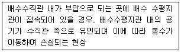
- 증발 현상
- 모세관 현상
- 유도사이펀 작용
- 자기사이펀 작용
(정답률: 81%)
25. 워터해머를 방지하기 위한 방법으로 옳지 않은 것은?
- 급폐쇄형 수도꼭지를 사용한다.
- 관내의 수압은 평상시 높아지지 않도록 구획한다.
- 배관은 가능한 한 우회하지 않고 직선이 되도록 계획한다.
- 수입이 0.4MPa을 초과하는 계통에는 감압밸브를 부착하여 적절한 압력으로 감압한다.
(정답률: 78%)
26. 급탕설비의 급탕배관 시 고려사항으로 옳지 않은 것은?
- 급탕계통에는 유지 관리를 위해 용이하게 조작할 수 있는 위치에 개폐밸브를 설치한다.
- 탕비기 주위 등의 급탕배관은 가능한 짧게 하고 공기가 체류하지 않도록 균일한 구배로 한다.
- 배관 길이가 30m를 초과하는 중앙식 급탕설비에서는 환탕관과 순환펌프를 설치하여 배관의 열손실을 보상한다.
- 고층 건축물에서 급탕압력을 일정압력 이하로 제어하기 위해 감압밸브를 설치하는 경우 순환계통에 설치하도록 한다.
(정답률: 63%)
27. 급탕배관에 관한 설명으로 옳지 않은 것은?
- 중앙식 급탕설비는 원칙적으로 강제순환방식으로 한다.
- 상향배관인 경우 급탕관은 하향구배, 환탕관은 상향구배를 한다.
- 배관시공 시 굴곡배관을 해야 할 경우에는 공기빼기밸브를 설치한다.
- 관의 신축을 고려하여 건물의 벽 관통부분 배관에는 슬리브를 끼운다.
(정답률: 83%)
28. 안지름 100mm의 관에서 2m/sec의 유속으로 물이 흐를 때 마찰손실수두가 10m라고 하면 이 관의 길이는 몇 m인가? (단, 마찰손실계수 f는 0.02로 한다.)
- 184
- 245
- 262
- 294
(정답률: 64%)
29. 아파트 1동 90세대의 급탕설비를 중앙공급식으로 할 경우, 시간당 최대 급탕량(A)과 저탕량(B)으로 옳은 것은? (단, 1세대당 기구급탕량은 샤워 110L/h, 싱크 40L/h, 세탁기 70L/h를 기준으로 하고, 동시사용률은 30%를 저탕용량계수는 1.25를 적용한다.)
- A=5940L/h, B=7425L
- A=7425L/h, B=5940L
- A=25740L/h, B=7425L
- A=25740L/h, B=32175L
(정답률: 64%)
30. 급수배관방식에 관한 설명으로 옳지 않은 것은?
- 일반적으로 고가수조방식에서는 하향배관방식이 사용된다.
- 상향배관방식에서 수직관의 관경은 올라갈수록 크게 한다.
- 혼합배관방식으로 하는 경우 저층부는 상향배관방식으로 한다.
- 상향배관방식에서는 관내의 공기를 배출하기 위해 관의 제일 윗부분에 공기빼기밸브 등을 설치한다.
(정답률: 82%)
31. 정화조의 성능을 나타내는 BOD 제거율(%)을 올바르게 나타낸 것은?
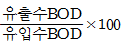
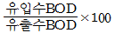
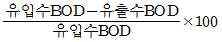
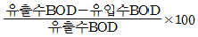
(정답률: 86%)
32. 트랩이 구비해야 할 조건으로 옳지 않은 것은?
- 가동부분이 있을 것
- 자정 작용이 가능할 것
- 기구내장 트랩의 내벽 및 배수로의 단면 형상에 급격한 변화가 없을 것
- 봉수부의 소제구는 나사식 플러그 및 적절한 가스켓을 이용한 구조일 것
(정답률: 61%)
33. 기구급수부하단위(Fu)가 1Fu인 위생기구의 종류 및 접속관경으로 옳은 것은?
- 세면기, 15mm
- 세면기, 25mm
- 대변기, 15mm
- 대변기, 25mm
(정답률: 69%)
34. 동 및 동합금관에 관한 설명으로 옳지 않은 것은?
- 담수에 내식성은 크나 연수에는 부식된다.
- 탄산가스를 포함한 공기중에서는 푸른 녹이 생긴다.
- 동관은 두께별로 K, L, M형 등으로 구분할 수 있다.
- 가성소다, 가성칼리 등 알칼리성에 심하게 침식된다.
(정답률: 55%)
35. 다음과 같은 조건에서 연면적인 20000m2인 사무소에 필요한 1일 급수량(사용수량)은?
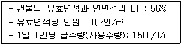
- 33.6m3/d
- 43.6m3/d
- 336m3/d
- 406m3/d
(정답률: 69%)
36. 강관 이음쇠에 관한 설명으로 옳지 않은 것은?
- 엘보우(elbow)는 관의 방향을 바꿀 때 사용된다.
- 티(tee), 크로스(cross)는 관을 도중에서 분기할 때 사용된다.
- 레듀서(reducer)는 관경이 서로 다른 관을 접속할 때 사용된다.
- 플러그(plug), 캡(cap)은 동일 관경의 관을 직선 연결할 때 사용된다.
(정답률: 82%)
37. 다음 설명에 알맞은 유체역할 기초 이론은?
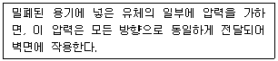
- 연속의 법칙
- 파스칼의 원리
- 피토관의 원리
- 베르누이의 정리
(정답률: 75%)
38. 유체의 흐름에 관한 설명으로 옳지 않은 것은?
- 난류는 유체분자가 불규칙하게 서로 섞이는 혼란된 흐름이다.
- 일반적으로 층류에서 난류로 천이할 때의 유속을 임계유속이라 한다.
- 레이놀즈 수에 의해 관내의 흐름이 층류인지 난류인지를 판별할 수 있다.
- 관내에 유체가 흐를 때, 어느 장소에서 흐름의 상태가 시간에 따라 변화하는 흐름을 정상류라 한다.
(정답률: 70%)
39. 통기수직관이 없는 방식으로 유수에 선회력을 주어 공기 코어를 유지시켜 하나의 관으로 배수와 통기를 겸하는 통기방식은?
- 섹스티아방식
- 각개통기방식
- 신정통기방식
- 회로통기방식
(정답률: 75%)
40. 고가수조의 유효용량 산정 시 기준이 되는 급수량은?
- 1일 급수량
- 시간평균예상급수량
- 순간최대예상급수량
- 시간최대예상급수량
(정답률: 48%)
3과목: 공기조화설비
41. 냉온수 배관의 기본회로 방식에 관한 설명으로 옳지 않은 것은?
- 배관의 최저부에는 물빼기밸브를 설치한다.
- 배관의 분기부에는 원칙적으로 밸브를 설치한다.
- 밀폐회로 방식에 대해서는 1개의 순환계통에 팽창 탱크는 최소 2기 이상으로 한다.
- 개방회로 방식에 대해서는 순환보일러 정지 시 기기, 배관 등을 만수상태로 유지한다.
(정답률: 59%)
42. 압축식 냉동기의 구성요소 중 냉동의 목적을 직접적으로 달성하는 것은?
- 흡수기
- 증발기
- 발생기
- 응축기
(정답률: 71%)
43. 국부저항의 상당길이에 관한 설명으로 옳지 않은 것은?
- 배관의 지름이 커질수록 상당길이는 길어진다.
- 45° 표준 엘보보다는 90° 표준 엘보의 상당 길이가 길다.
- 밸브류의 경우 개폐도(開閉度)가 작을수록 상당길이는 길어진다.
- 동일한 배관 지름, 전개(全開)일 경우 앵글밸브보다 게이트밸브의 상당길이가 길다.
(정답률: 56%)
44. 취출공기의 이동과 관련된 유인비를 옳게 나타낸 것은?
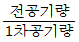
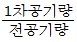
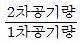
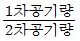
(정답률: 50%)
45. 다음 중 펌프의 흡입관에서 발생하는 공동현상의 방지 방법과 가장 거리가 먼 것은?
- 흡입양정을 낮춘다.
- 양흡입 펌프를 사용한다.
- 흡입관의 관경을 크게 한다.
- 펌프의 회전수를 증가시킨다.
(정답률: 74%)
46. 온수난방과 증기난방의 비교 설명으로 옳지 않은 것은?
- 온수난방은 증기난방에 비하여 운전정지 중에 동결의 위험이 크다.
- 온수난방은 증기난방에 비하여 소요방열 면적과 배관경이 크게 된다.
- 증기난방은 온수난방에 비하여 열용량이 커 예열시간이 길게 소요된다.
- 온수난방은 증기난방에 비하여 난방부하 변동에 따른 온도조절이 용이하다.
(정답률: 77%)
47. 냉각탑의 냉각수 입구온도가 tω1, 출구온도가 tω2이고, 공기의 입구 습구온도가 t1, 출구 습구온도가 t2일 때, 어프로치(approach)는?
- tω1 - t1
- tω2 - tω1
- t2 - t1
- tω2 - t1
(정답률: 61%)
48. 팬코일 유닛방식과 단일덕트방식을 병용하여 사용하는 경우에 관한 설명으로 옳지 않은 것은?
- 창면에 콜드 드래프트를 방지할 수 있다.
- 팬코일 유닛방식은 건물의 외부존의 부하를 담당한다.
- 대형 건축물의 내부 존과 외부 존을 구분하여 공조하는 시스템이 적용된다.
- 팬코일 유닛방식을 단독으로 설치한 것과 비교하여 설비비가 적게 든다.
(정답률: 70%)
49. 냉방부하 계산 시 구조체의 축열부하에 관한 설명으로 옳지 않은 것은?
- 구조체의 열용량과 관련이 있다.
- 시간지연(time-lag)현상을 유발한다.
- 간헐냉방을 하는 경우 예냉부하를 필요로 한다.
- 구조체의 열용량이 클수록 피크로드는 증가한다.
(정답률: 58%)
50. 습공기선도에 관한 설명으로 옳지 않은 것은?
- 현열비 ‘1’은 수평상태의 기울기를 나타낸다.
- 열수분비 ‘0’의 기울기는 비엔탈피선과 동일한 기울기를 나타낸다.
- 습공기선도 상에서 건구온도 30℃, 습구온도 20℃인 습공기의 노점온도는 파악할 수 없다.
- 습공기의 상태가 변화하고 이를 습공기선도에 표시하면 현열뿐만 아니라 잠열의 변화량도 알 수 있다.
(정답률: 71%)
51. 다음과 같은 조건으로 냉방운전을 하고 있을 경우, 필요 송풍량은?
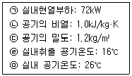
- 6m3/s
- 7m3/s
- 8m3/s
- 9m3/s
(정답률: 55%)
52. 환기 방법 중 열기나 유해물질이 실내에 널리 산재되어 있거나 이동되는 경우에 사용하며, 전체환기라고도 불리우는 것은?
- 집중환기
- 희석환기
- 국소환기
- 자연환기
(정답률: 71%)
53. 기온·습도·기류의 3요소의 조합에 의한 실내 온열감각을 기온의 척도로 나타낸 것은?
- 등가온도
- 작용온도
- 등온지수
- 유효온도
(정답률: 75%)
54. 500명을 수용하는 극장에서 1인당 이산화탄소 배출량이 20L/h일 때, 이산화탄소 농도가 0.⑤%인 외기를 도입하여 실내의 이산화탄소 농도를 0.1%로 유지하는데 필요한 환기량은?
- 15000m3/h
- 20000m3/h
- 25000m3/h
- 30000m3/h
(정답률: 69%)
55. 건구온도 20℃, 상대습도 50%인 습공기(절대습도 0.0072kg/kg, 엔탈피 39kJ/kg) 8000kg/h을 가열, 가습하여 건구온도 35℃, 상대습도 50%인 습공기(절대습도0.0179kg/kg, 엔탈피 80.9kJ/kg)로 만들었다. 이 때의 열수분비는 얼마인가?
- 2854kJ/kg
- 3242kJ/kg
- 3916kJ/kg
- 4582kJ/kg
(정답률: 50%)
56. 냉수코일을 통과하는 풍량이 10000m3/h, 코일 입출구의 엔탈피는 각각 42kJ/kg, 68.5kJ/kg이고, 코일 정면면적이 1.2m2일 때 코일의 열수는? (단, 코일의 열관류율은 880W/m2·K이며 대수평균온도차는 12.57℃, 습면보정계수는 1.42, 공기의 밀도는 1.2kg/m3이다.)
- 4열
- 5열
- 8열
- 10열
(정답률: 39%)
57. 다음 중 현열만을 취득하게 되는 냉방부하는?
- 인체의 발생열량
- 벽체로부터의 취득열량
- 외기로부터의 취득열량
- 틈새바람에 의한 취득열량
(정답률: 70%)
58. 중앙식 공기조화기에서 가습방식의 분류 중 수분무식에 속하지 않는 것은?
- 원심식
- 분무식
- 초음파식
- 적외선식
(정답률: 60%)
59. 다음과 같은 특징을 갖는 축류형 취출구는?
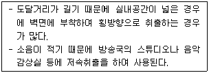
- 팬형
- 노즐형
- 아네모스탯형
- 브리즈라인형
(정답률: 68%)
60. 다음 중 증기와 응축수 사이의 온도차를 이용하는 온도조절식 증기트랩에 속하는 것은?
- 버킷 트랩
- 벨로즈 트랩
- 열동식 트랩
- 플로트 트랩
(정답률: 63%)
4과목: 소방 및 전기설비
61. 무접점 계전기에 사용되는 전력전자소자(트랜지스터, 다이오드)에 관한 설명으로 옳지 않은 것은?
- 스위칭 속도가 빠르다.
- 전력소비가 대단히 작다.
- 잡음(noise)의 영향을 받지 않는다.
- 접점의 개폐동작으로 인한 마모현상이 없다.
(정답률: 75%)
62. 다음 설명에 알맞은 건축화 조명방식은?
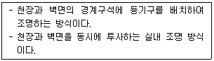
- 코너 조명
- 코퍼 조명
- 광천장 조명
- 밸런스 조명
(정답률: 63%)
63. 다음 설명에 알맞은 화재의 종류는?
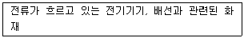
- A급 화재
- B급 화재
- C급 화재
- K급 화재
(정답률: 79%)
64. 피드백 제어방식을 제어동작에 의해 분류할 경우, 연속 동작에 해당하는 것은?
- 미분 동작
- 2위치 동작
- 다위치 동작
- ON-OFF 동작
(정답률: 65%)
65. 어느 학교에서 면적인 200m2인 교실에 32[W]형광램프를 설치하여 평균조도를 400[lx]로 설계하고자 할 때 소요 램프수는? (단, 형광램프 1개 광속은 3000[lm], 조명률은 0.6, 보수율은 0.8이다.)
- 14개
- 28개
- 42개
- 56개
(정답률: 51%)
66. 병원 등에 설치되는 모자식 전기시계에 관한 설명으로 옳은 것은?
- 자시계의 설치 높이는 하단부가 1.5m 이상으로 한다.
- 탁상형 모시계는 자시계 회로수가 3회로 이상인 경우 사용한다.
- 모시계와 자시계를 연결하는 배선의 전압 강하는 15%이하가 되도록 한다.
- 벽걸이형 모시계는 소규모 모시계로 자시계 회로수가 3회로 이내인 경우 사용한다.
(정답률: 55%)
67. 다음 그림과 같은 회로의 합성 정전용량은?
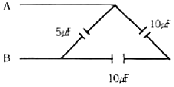
- 5[μF]
- 10[μF]
- 15[μF]
- 20[μF]
(정답률: 54%)
68. 다음은 교류의 표현에 관한 설명이다. ( )안에 알맞은 용어는?
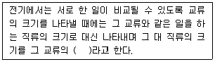
- 실효치
- 평균치
- 비교치
- 균등치
(정답률: 67%)
69. 납축전지가 방전되면 양(+)극은 어떠한 물질로 되는가?
- Pb
- PbSO4
- PbO
- PbO2
(정답률: 73%)
70. 연결살수설비에 설치되는 송수구의 구경 기준은?
- 32mm
- 40mm
- 50mm
- 65mm
(정답률: 71%)
71. 다음이 설명하는 법칙은?
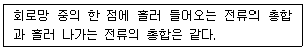
- 오옴의 법칙
- 키르히호프 제1법칙
- 키르히호프 제2법칙
- 앙페르의 오른나사의 법칙
(정답률: 74%)
72. 감전방지를 위하여 3상 380V 농형유도전동기의 금속제 외함에 실시하는 접지공사는?
- 제1종 접지공사
- 제2종 접지공사
- 제3종 접지공사
- 특별 제3종 접지공사
(정답률: 63%)
73. 고압 이상 전로에서 단독으로 전로의 접속 또는 분리를 목적으로 하며 무전압이나 무전류에 가까운 상태에서 안전하게 전로를 개폐하는 것은?
- 퓨즈
- 단로기
- 변성기
- 콘덴서
(정답률: 65%)
74. 플레밍의 왼손 법칙을 응용한 기기는?
- 펌프
- 전동기
- 발전기
- 변압기
(정답률: 67%)
75. 옥내소화전설비의 수조에 관한 설명으로 옳지 않은 것은?
- 수조의 상단에는 청소용 배수밸브 또는 배수관을 설치하여야 한다.
- 동결방지조치를 하거나 동결의 우려가 없는 장소에 설치하여야 한다.
- 수조가 실내에 설치된 때에는 그 실내에 조명 설비를 설치하여야 한다.
- 수조의 상단이 바닥보다 높은 때에는 수조의 외측에 고정식 사다리를 설치하여야 한다.
(정답률: 73%)
76. 다음의 옥외소화전설비의 수원에 관한 설명 중 ( )안에 알맞은 것은?
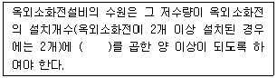
- 1.7m3
- 2.6m3
- 7m3
- 12m3
(정답률: 65%)
77. 3[Ω]의 저항과 4[Ω]의 유도 리액턴스가 병렬로 접속되어있을 때, 이 회로의 합성 임피던스는?
- 2.0[Ω]
- 2.2[Ω]
- 2.4[Ω]
- 2.6[Ω]
(정답률: 45%)
78. Y-△ 기동법은 어떤 전동기의 기동법인가?
- 직권 전동기
- 동기 전동기
- 유도 전동기
- 타여자 전동기
(정답률: 65%)
79. 스프링클러설비의 화재안전기준에 사용되는 교차배관의 정의로 옳은 것은?
- 각 층을 수직으로 관통하는 수직배관
- 스프링클러헤드가 설치되어 있는 배관
- 직접 또는 수직배관을 통하여 가지배관에 급수하는 배관
- 수원 및 옥외송수구로부터 스프링클러헤드에 급수하는 배관
(정답률: 70%)
80. 역률에 관한 설명으로 옳은 것은?
- 백열전등이나 전열기의 역률은 100[%]이다.
- 무효전력에 대한 유효전력의 비를 역률이라 한다.
- 역률은 부하의 종류와는 관계가 없으며 공급 전력의 질을 의미한다.
- 역률산정 시에 필요한 피상전력은 유효전력과 무효전력의 산술합이다.
(정답률: 55%)
5과목: 건축설비관계법규
81. 배연설비의 설치에 관한 기준 내용으로 옳지 않은 것은?
- 배연창의 유효면적은 1m2이상으로 할 것
- 배연구는 예비전원에 의하여 열 수 있도록 할 것
- 배연구는 연기감지기 또는 열감지기에 의해 자동으로 열 수 있는 구조로 할 것
- 관련 규정에 따라 건축물이 방화구획으로 구획된 경우 그 구획마다 2개소 이상의 배연창을 설치할 것
(정답률: 56%)
82. 자동화재탐지설비를 설치하여야 하는 특정소방대상물에 속하지 않는 것은?
- 위락시설로서 연면적 600m2 이상인 것
- 숙박시설로서 연면적 600m2 이상인 것
- 문화 및 집회시설로서 연면적 1000m2 이상인 것
- 근린생활시설 중 목욕장으로서 연멱적 800m2 이상인 것
(정답률: 57%)
83. 건축법령상 공동주택 중 아파트의. 정의로 옳은 것은?
- 주택으로 쓰는 층수가 5개 층 이상인 주택
- 주택으로 쓰는 층수가 6개 층 이상인 주택
- 주택으로 쓰는 1개 동의 바닥면적 합계가 660m2를 초과하고, 층수가 5개 층 이상인 주택
- 주택으로 쓰는 1개 동의 바닥면적 합계가 660m2를 초과하고, 층수가 6개 층 이상인 주택
(정답률: 56%)
84. 문화 및 집회시설 중 공연장의 개별 관람실 출구의 설치기준 내용으로 옳지 않은 것은? (단, 개별 관람실의 바닥면적이 300m2이상인 경우)
- 관람실별로 2개소 이상 설치할 것
- 각 출구의 유효너비는 1.2m 이상일 것
- 관람실로부터 바깥쪽으로의 출구로 쓰이는 문은 안여닫이로 하지 않을 것
- 개별 관람실 출구의 유효너비의 합계는 개별 관람실의 바닥면적 100m2마다 0.6m의 비율로 산정한 너비 이상으로 할 것
(정답률: 61%)
85. 외기에 직접 면하고 1층 또는 지상으로 연결된 출입문을 방풍구조로 하지 않아도 되는 경우에 관한 기준 내용으로 옳지 않은 것은?
- 기숙사의 출입문
- 너비 1.2m 이하의 출입문
- 바닥면적 300m2 이하의 개별 점포의 출입문
- 사람의 통행을 주목적으로 하지 않는 출입문
(정답률: 57%)
86. 방염성능기준 이상의 실내장식물 등을 설치 하여야 하는 특정소방대상물에 속하는 것은?
- 기숙사
- 판매시설
- 숙박시설
- 실내수영장
(정답률: 54%)
87. 건축법령에 따른 건축물의 용도분류 중 숙박시설에 속하지 않는 것은?
- 호스텔
- 유스호스텔
- 의료관광호텔
- 휴양 콘도미니엄
(정답률: 63%)
88. 건축물의 출입구에 설치하는 회전문에 관한 기준 내용으로 옳지 않은 것은?
- 계단이나 에스컬레이터로부터 1.5m 이상의 거리를 둘 것
- 회전문의 회전속도는 분당회전수가 8회를 넘지 아니하도록 할 것
- 출입에 지장이 없도록 일정한 방향으로 회전하는 구조로 할 것
- 회전문의 중심축에서 회전문과 문틀 사이의 간격을 포함한 회전문날개 끝부분까지의 길이는 140cm 이상이 되도록 할 것
(정답률: 75%)
89. 세대수가 17세대인 다세대주택에 설치하는 음용수용 급수관의 지름은 최소 얼마 이상으로 하여야 하는가?
- 25mm
- 32mm
- 40mm
- 50mm
(정답률: 56%)
90. 바닥으로부터 높이 1m까지의 안벽의 마감을 내수재료로 하여야 하는 대상건축물이 아닌 것은?
- 단독주택의 욕실
- 제1종 근린생활시설 중 휴게음식점의 조리장
- 제2종 근린생활시설 중 휴게음식점의 조리장
- 제2종 근린생활시설 중 일반음식점의 조리장
(정답률: 72%)
91. 건축물의 냉방설비에 대한 설치 및 설계기준에 정의된 축냉식 전기냉방설비의 구분에 속하지 않는 것은?
- 지열식 냉방설비
- 수축열식 냉방설비
- 빙축열식 냉방설비
- 잠열축열식 냉방설비
(정답률: 69%)
92. 신축하는 공동주택의 환기횟수를 확보하기 위하여 설치되는 기계환기설비의 설계·시공 미 성능평가방법 내용으로 옳지 않은 것은? (단, 100세대 이상의 공동주택의 경우)
- 세대의 환기량 조절을 위하여 환기설비의 정격풍량을 최소·최대의 2단계로 조절할 수 있는 체계를 갖추어야 한다.
- 기계환기설비는 공동주택의 모든 세대가 규정에 의한 환기횟수를 만족시킬 수 있도록 24시간 가동할 수 있어야 한다.
- 하나의 기계환기설비로 세대 내 2 이상의 실에 바깥공기를 공급할 경우의 필요 환기량은 각 실에 필요한 환기량의 한계 이상이 되도록 하여야 한다.
- 기계환기설비의 환기기준은 시간당 실내공기교환횟수(환기설비에 의한 최종 공기흡입구에서 세대의 실내로 공급되는 시간당 총 체적풍량을 실내 총 체적으로 나눈 환기횟수를 말한다)로 표시하여야 한다.
(정답률: 56%)
93. 공사감리자가 공사시공자로 하여금 상세시공도면을 작성하도록 요청할 수 있는 건축공사의 연멱적 기준으로 옳은 것은?
- 1500m2 이상
- 3000m2 이상
- 5000m2 이상
- 10000m2 이상
(정답률: 58%)
94. 다음의 소방시설 중 피난구조설비에 속하지 않은 것은?
- 완강기
- 인공소생기
- 객석유도등
- 시각경보기
(정답률: 54%)
95. 지능형 건축물의 인증에 관한 설명으로 옳지 않은 것은?
- 지능형 건축물 인증기준에는 인증표시 홍보기준, 유효기간 등의 사항이 포함된다.
- 산업통상자원부장관은 지능형 건축물의 인증을 우하여 인증기관을 지정할 수 있다.
- 국토교통부장관은 지능형 건축물의 건축을 활성화하기 위하여 지능형 건축물 인증제도를 실시한다.
- 허가권자는 지능형 건축물로 인증 받은 건축물에 대하여 조경설치면적을 100분의 85까지 완화하여 적용할 수 있다.
(정답률: 58%)
96. 다음 중 내화구조에 속하지 않는 것은? (단, 바닥의 경우)
- 철근콘크리트조로서 두께가 10cm인 것
- 철골철근콘크리트조로서 두께가 10cm인 것
- 철재의 양면을 두께 5cm의 철망모르타르로 덮은 것
- 무근콘크리트조·벽돌조 또는 석조로서 그 두께가 7cm인 것
(정답률: 60%)
97. 제연설비를 설치하여야 하는 특정소방대상물에 속하지 않는 것은?
- 지하가(터널은 제외)로서 연면적 1000m2인 것
- 문화 및 집회시설로서 무대부의 바닥면적이 150m2인 것
- 문화 및 집회시설 중 영화상영관으로서 수용인원이 100명인 것
- 지하층에 설치된 숙박시설로서 해당 용도로 사용되는 바닥면적의 합계가 1000m2인 층
(정답률: 58%)
98. 비상용승강기의 승강장 및 승강로의 구조에 관한 기준 내용으로 옳지 않은 것은?
- 승강로는 당해 건축물의 다른 부분과 방화 구조로 구획할 것
- 각 층으로부터 피난층까지 이르는 승강로를 단일구조로 연결하여 설치할 것
- 승강장에는 노대 도는 외부를 향하여 열 수 있는 창문이나 배연설비를 설치할 것
- 옥내에 있는 승강자의 바닥면적은 비상용 승강기 1대에 대하여 6m2이상으로설치할 것
(정답률: 41%)
99. 다음은 건축법상 건축허가에 관한 기준 내용이다. ( )안에 알맞은 것은?
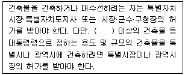
- 6층
- 11층
- 16층
- 21층
(정답률: 71%)
100. 건축물의 바깥쪽에 설치하는 피난계단의 구조에 관한 기준 내용으로 옳지 않은 것은?
- 계단의 유효너비는 0.9m 이상으로 할 것
- 계단은 내화구조로 하고 지상까지 직접 연결되도록 할 것
- 건축물의 내부에서 계단으로 통하는 출입구에는 갑종방화문을 설치할 것
- 계단은 그 계단으로 통하는 출입구와의 창문 등으로부터 1m 이상의 거리를 두고 설치할 것
(정답률: 61%)